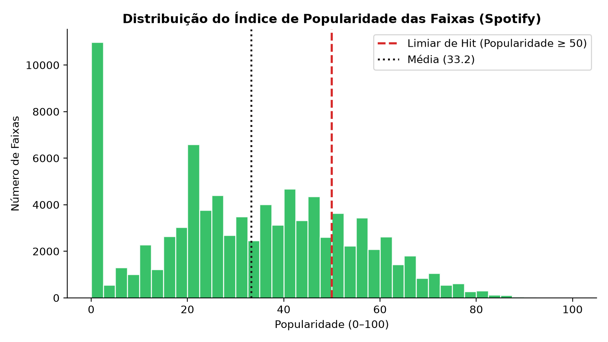
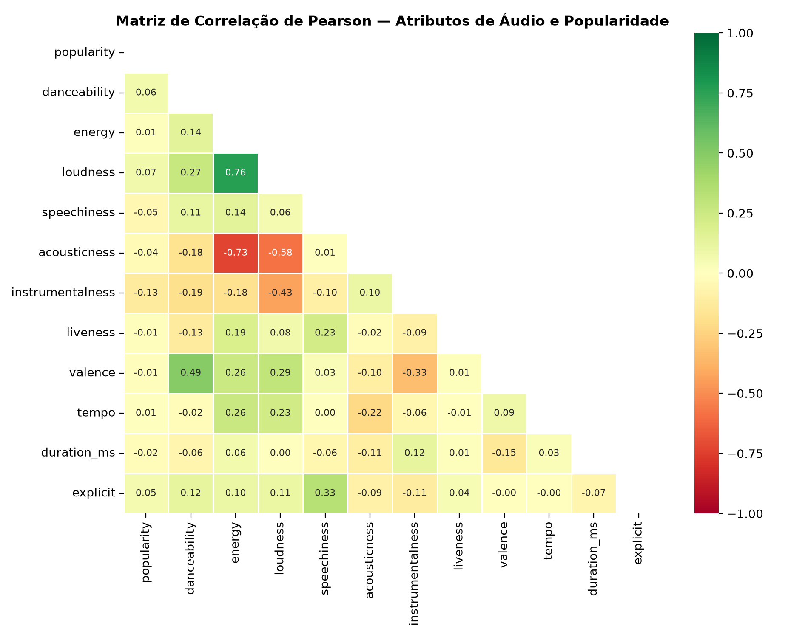
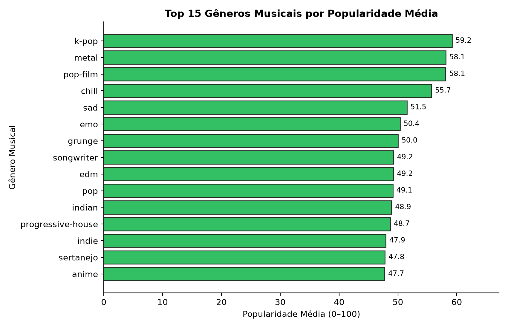
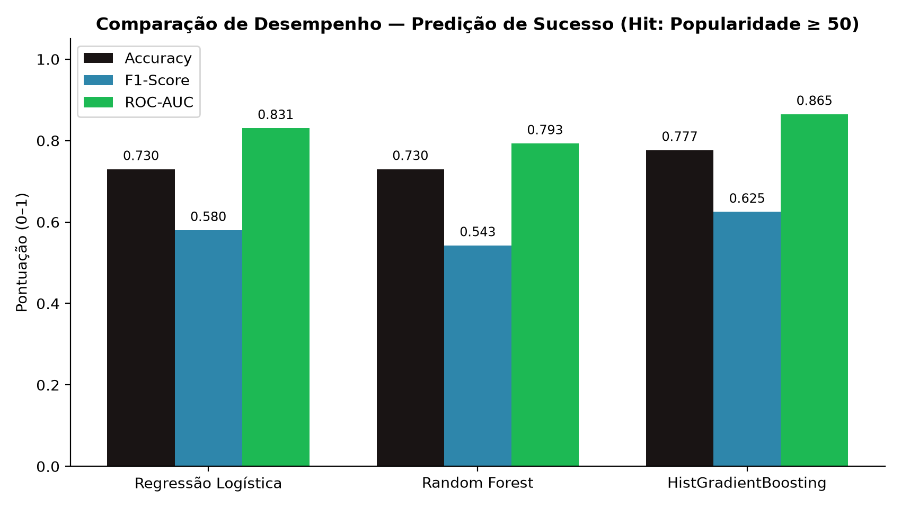
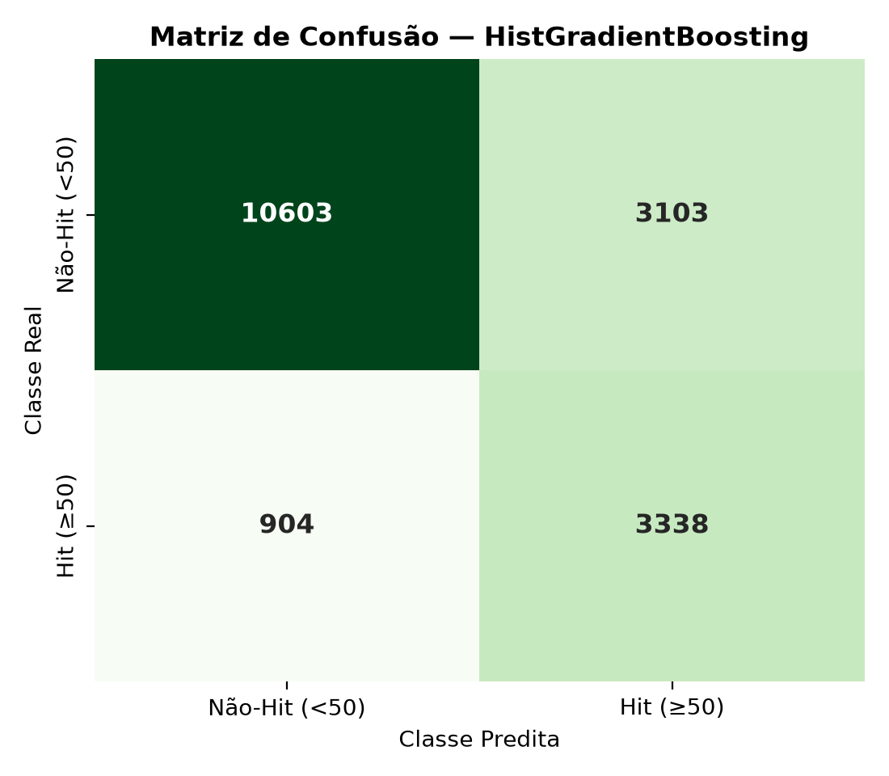

Predição de Popularidade e Classificação de Gêneros Musicais no Spotify por Meio de Aprendizado de Máquina
Repositório Público: github.com/vinikyo/spotify-hit-intelligence
Resumo
O crescimento exponencial das plataformas de streaming musical transformou radicalmente a indústria fonográfica, gerando catálogos com dezenas de milhões de faixas e ampliando a disputa pela atenção dos ouvintes. Este trabalho apresenta o sistema Spotify Hit & Genre Intelligence, um pipeline reproduzível de Ciência de Dados e Aprendizado de Máquina aplicado ao Spotify Tracks Dataset (114.000 registros originais e 89.740 faixas únicas após deduplicação, abrangendo 114 gêneros musicais). Foram investigadas três tarefas supervisionadas complementares: (i) regressão do índice contínuo de popularidade (popularity), (ii) classificação binária de faixas de alto sucesso comercial (is_hit, definido por popularity ≥ 50) e (iii) classificação multiclasse de gênero musical (track_genre) em 10 gêneros representativos utilizando exclusivamente atributos acústicos. Os resultados experimentais demonstram que relações não lineares dominam o fenômeno: na regressão, o Random Forest Regressor atingiu R² = 0,4394 e RMSE = 15,316 (+11,1 p.p. sobre Ridge); na predição de hits, o HistGradientBoosting alcançou ROC-AUC = 0,8649, acurácia de 77,67% e revocação de 78,69%; e na classificação de gêneros, o Random Forest obteve acurácia de 66,03% (F1-Macro = 0,6632). A análise de importância por permutação evidenciou o gênero musical, volume, duração, valência e energia como principais determinantes preditivos.
Palavras-chave: Aprendizado de Máquina; Spotify; Predição de Popularidade; Classificação de Gêneros Musicais; Ciência de Dados; Hit Song Science.
Abstract
The rapid expansion of music streaming platforms has reshaped the phonographic industry, creating hypercompetitive catalogs of tens of millions of tracks. This paper introduces Spotify Hit & Genre Intelligence, a reproducible Data Science and Machine Learning pipeline applied to the Spotify Tracks Dataset (114,000 raw records and 89,740 unique tracks across 114 genres). Three supervised tasks were evaluated: (i) continuous popularity regression (popularity), (ii) binary hit classification (is_hit, popularity ≥ 50), and (iii) 10-class genre classification (track_genre) using solely acoustic features. Non-linear tree ensembles consistently outperformed linear baselines: Random Forest achieved R² = 0.4394 and RMSE = 15.316 on regression; HistGradientBoosting reached ROC-AUC = 0.8649, 77.67% accuracy, and 78.69% recall on hit prediction; and Random Forest achieved 66.03% accuracy (Macro-F1 = 0.6632) on genre classification.
Keywords: Machine Learning; Spotify; Popularity Prediction; Music Genre Classification; Data Science; Hit Song Science.
1. Introdução
Nas últimas duas décadas, o consumo de música migrou de mídias físicas para plataformas de streaming sob demanda como Spotify, Apple Music e Deezer. Com mais de 100 mil novas faixas publicadas diariamente, compreender quais atributos acústicos e estruturais se associam ao sucesso comercial tornou-se um diferencial competitivo na área conhecida como Hit Song Science (HSS).
Embora fatores externos (marketing, fama prévia do artista e viralização em redes sociais) influenciem o alcance de uma música, os atributos acústicos extraídos pela Spotify Web API — como dançabilidade, energia, valência, volume, andamento e duração — constituem sinais objetivos disponíveis antes mesmo do lançamento. Este trabalho projeta e avalia o sistema Spotify Hit & Genre Intelligence para responder a três questões: (QP1) com qual precisão estimar a popularidade contínua; (QP2) qual o poder discriminativo na detecção de hits; e (QP3) quão bem atributos acústicos isolados distinguem gêneros musicais.
2. Referencial Teórico
Pachet e Roy (2008) discutiram os desafios iniciais da Hit Song Science ao demonstrar limitações de modelos lineares para capturar preferências coletivas. Posteriormente, Interiano et al. (2018) analisaram décadas de paradas britânicas e identificaram padrões consistentes em atributos acústicos de sucessos comerciais, como menor instrumentalidade e maior compressão de volume (loudness). Em paralelo, Tzanetakis e Cook (2002) consolidaram a classificação automática de gêneros musicais a partir de descritores de áudio. Estudos recentes evidenciam que modelos ensemble baseados em árvores — Random Forest (Breiman, 2001) e Gradient Boosting por histogramas (Ke et al., 2017) — capturam com eficácia interações não lineares entre gênero e assinatura acústica.
3. Materiais e Métodos
3.1 Conjunto de Dados e Pré-processamento
Utilizou-se o Spotify Tracks Dataset de Maharshi Pandya (Kaggle), contendo 114.000 registros brutos, 20 variáveis úteis e 114 gêneros musicais. Na etapa de limpeza, foram removidos 3 valores nulos em metadados textuais e deduplicadas 24.260 entradas repetidas por track_id (mantendo o registro de maior popularidade) para impedir vazamento de dados entre treino e teste. A base final consolidou 89.740 faixas únicas.
3.2 Definição dos Objetivos (Targets) e Protocolo Experimental
O pipeline foi implementado em Python com scikit-learn (random_state = 42, divisão 80% treino / 20% teste estratificada para classificação):
- Target 1 — Regressão (
popularity): Estimativa contínua (0–100) usando 14 atributos acústicos +track_genre. Modelos: Ridge, Random Forest e HistGradientBoosting. - Target 2 — Classificação Binária (
is_hit): Identificação de faixas compopularity ≥ 50(21.210 faixas; 23,63% da base), comclass_weight="balanced". Modelos: Regressão Logística, Random Forest e HistGradientBoosting. - Target 3 — Classificação Multiclasse (
track_genre): Reconhecimento de 10 gêneros representativos (classical,hip-hop,metal,pop,jazz,electronic,acoustic,reggaeton,country,rock; 7.077 faixas) usando exclusivamente os 14 atributos acústicos.
4. Resultados e Discussão
4.1 Análise Exploratória
As 89.740 faixas únicas apresentam popularidade média de 33,21 (DP = 20,57; mediana = 33,0), duração média de 3,82 min, 8,58% de conteúdo explícito e 10,42% de faixas com popularidade zero (efeito de cauda longa). As correlações lineares isoladas com popularidade são modestas (loudness r = +0,0717; danceability r = +0,0643; instrumentalness r = −0,1276), enquanto a variação por gênero é expressiva (k-pop: 59,19; metal: 58,13; pop-film: 58,12 vs. iranian: 2,22).



4.2 Target 1 — Regressão de Popularidade
| Modelo | RMSE | MAE | R² |
|---|---|---|---|
| Ridge Regression | 16,759 | 11,972 | 0,3288 |
| HistGradientBoosting Regressor | 15,558 | 10,871 | 0,4216 |
| Random Forest Regressor | 15,316 | 10,893 | 0,4394 |
O Random Forest Regressor superou a Regressão Ridge em 11,06 pontos percentuais de R², confirmando o caráter fortemente não linear da popularidade musical.
4.3 Target 2 — Classificação Binária de Hits (is_hit)
| Modelo | Acurácia | Precisão | Revocação | F1-Score | ROC-AUC |
|---|---|---|---|---|---|
| Regressão Logística | 72,97% | 0,4583 | 0,7897 | 0,5800 | 0,8305 |
| Random Forest | 72,99% | 0,4524 | 0,6780 | 0,5427 | 0,7931 |
| HistGradientBoosting | 77,67% | 0,5182 | 0,7869 | 0,6249 | 0,8649 |



4.4 Target 3 — Classificação Multiclasse de Gêneros (10 classes)
| Modelo | Acurácia | F1-Macro |
|---|---|---|
| Regressão Logística | 47,18% | 0,4714 |
| HistGradientBoosting | 63,35% | 0,6340 |
| Random Forest | 66,03% | 0,6632 |
Apenas com atributos acústicos numéricos, o Random Forest alcançou 66,03% de acurácia (mais de 6,6 vezes acima do acaso de 10%), demonstrando a viabilidade de catalogação automática de gêneros musicais.
5. Limitações e Trabalhos Futuros
A parcela de variância não explicada na regressão (~56%) reflete fatores exógenos ausentes na base, como base de seguidores do artista, investimentos de marketing e tendências virais em redes sociais. Como trabalhos futuros, recomenda-se integrar metadados temporais de artistas via Spotify API, incorporar espectrogramas de áudio com Redes Neurais Convolucionais e publicar uma interface interativa de simulação para produtores.
6. Conclusão
O sistema Spotify Hit & Genre Intelligence demonstrou que algoritmos ensemble não lineares extraem alto poder preditivo dos atributos musicais do Spotify, alcançando ROC-AUC de 0,8649 na identificação de hits, R² de 0,4394 na regressão de popularidade e 66,03% de acurácia na classificação de 10 gêneros musicais. Todo o código, métricas e visualizações são públicos e reproduzíveis no repositório GitHub do projeto.
Referências
BREIMAN, L. Random Forests. Machine Learning, v. 45, n. 1, p. 5–32, 2001.
INTERIANO, M. et al. Musical trends and predictability of success in contemporary songs in and out of the top charts. Royal Society Open Science, v. 5, n. 5, p. 171274, 2018.
KE, G. et al. LightGBM: A Highly Efficient Gradient Boosting Decision Tree. In: NeurIPS, v. 30, 2017.
PACHET, F.; ROY, P. Hit Song Science Is Not Yet a Science. In: Proc. ISMIR, p. 355–360, 2008.
PANDYA, M. Spotify Tracks Dataset. Kaggle, 2022. Disponível em: https://www.kaggle.com/datasets/maharshipandya/-spotify-tracks-dataset.
PEDREGOSA, F. et al. Scikit-learn: Machine Learning in Python. JMLR, v. 12, p. 2825–2830, 2011.
TZANETAKIS, G.; COOK, P. Musical genre classification of audio signals. IEEE Trans. Speech Audio Process., v. 10, n. 5, p. 293–302, 2002.